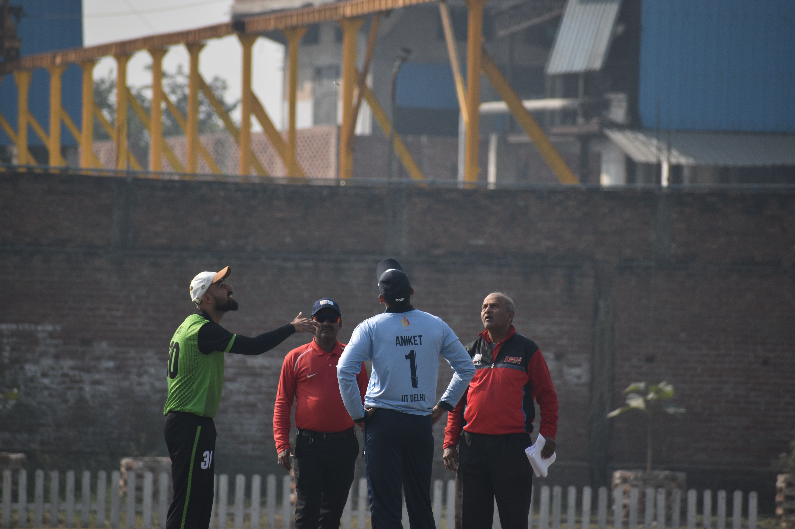
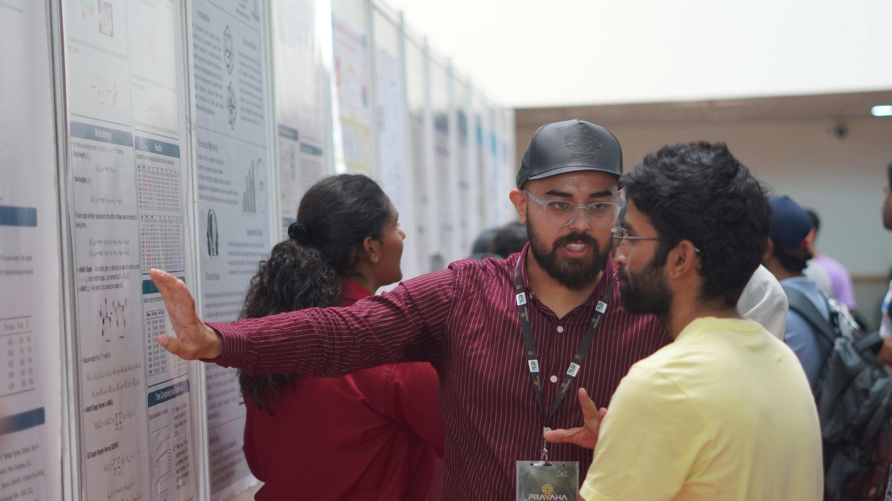

Efficient 3D kernels for molecular property prediction
ISMB/ECCB 2025
I'm a PhD research student at IIT Palakkad, working in the area of bioinformatics and computational drug discovery.
My research focuses on using 3D molecular structures to develop machine learning models for drug design, with a particular interest in making 3D graph-based models more explainable and easier to understand. Then list a few concrete areas below:
ISMB/ECCB 2025
Department of Data Science, IIT Palakkad
Assisted with tutorials, student queries, assignments, and course activities.
Department of Data Science, IIT Palakkad
Assisted students with course concepts, assignments, and academic activities.
Department of Data Science, IIT Palakkad
Assisted students with machine learning concepts, assignments, and course activities.
Department of Data Science, IIT Palakkad
Assisted students with deep learning concepts, assignments, and course activities.
Department of Data Science, IIT Palakkad
Assisted students with machine learning concepts, assignments, and course activities.
Department of Data Science, IIT Palakkad
Assisted students with deep learning concepts, assignments, and course activities.
Department of Data Science, IIT Palakkad
Assisting students with data structures, algorithms, assignments, and course activities in python language.
Indian Institute of Technology Palakkad
Himachal Pradesh University, Shimla, Himachal Pradesh
Himachal Pradesh University, Shimla, Himachal Pradesh
Government Degree College Sanjauli, Shimla, Himachal Pradesh
Outside of research, I enjoy playing different kinds of games and spending time on things that help me take a break from my work. Cricket is one of my favorite games, and I especially enjoy playing it whenever I get the chance.

.jpg)
